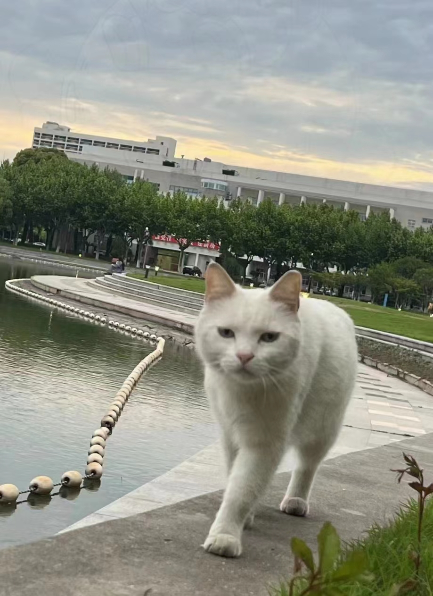
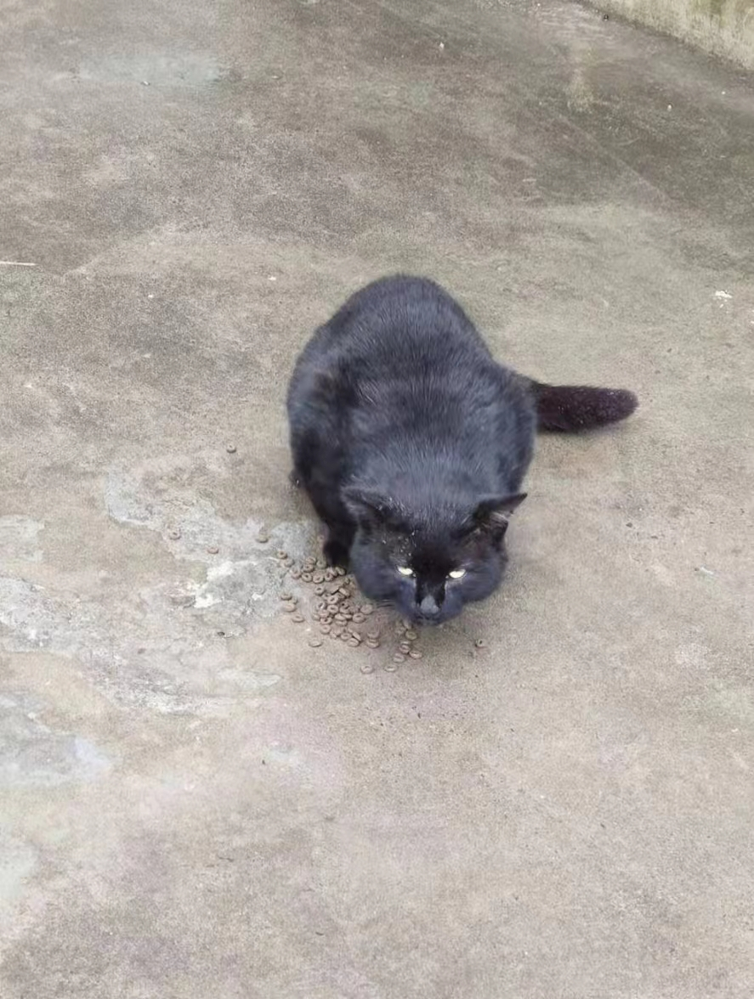

白粥
性别：公 已绝育
从隔壁学校跑来的小白猫，非常亲人可爱，目前已经在学校定居，喜欢在图书馆大道上等候同学们，看来又是一只爱学习的猫猫。不定期跟着大黑、小黑、壮姐一起生活
煤球
性别：公 已绝育
从隔壁工程大来的交换生，很快就适应了600弄的生活，是一个柔柔弱弱的小男生。跟丑橘关系比较近
小黑
性别：未知 未绝育
是小黑不是大黑，暂时还不清楚小黑跟大黑是什么关系，不过作为跟大黑在学校一起混的兄弟，要努力跟大黑学习生活技能。
咩咩
性别：母 已绝育
神出鬼没的美女咩咩，生了一窝奶牛猫在隔壁，最近似乎是想过子宫保养后的平静生活，频频来蹭饭并小住，黑豆喜欢贴贴的对象之一，似乎是致使小黑豆情窦初开的女神。。
国庆
性别：公 已绝育
蓝白和橘二的孩子，继承了蓝白的颜值和橘二的温柔，是一只很乖的小猫。爸爸是蓝白，妈妈是橘二，目前跟火锅、淮南一起玩
寒露
性别：母 已绝育
吃东西时可以摸一下，全身雪白，可爱的小妹妹，与重阳、鸡块同是橘三的孩子

大黑
性别：公 已绝育
流水的猫咪，铁打的大黑，当你觉得你当初瞥见的猫咪突然不见了，草从里一大抹黑影却像永远不会消失，两只绿眼睛仔细打量你是否会掏出一些美味的食物.....
蓝白
性别：公 已绝育
白猫中胆子最小，最像弟弟的一只，和小泥关系最好，总是被怕怕欺负和怕怕吵架，也怕呜呜，怕怕呜呜这两只坏猫咪还总是抢蓝白的好吃的吃。蓝白最近神出鬼没的，经常去电动车那里蹭饭。
小小白
性别：公 已绝育
杂乱的毛色和常年发黑的鼻头，让小小白这纯白色的猫咪显得有些不堪，如果说猫有性格的话，小小白更像是无问世俗的隐者，饿了，随便去垃圾站翻翻，饱了，寻一尺阳光，静静独享。